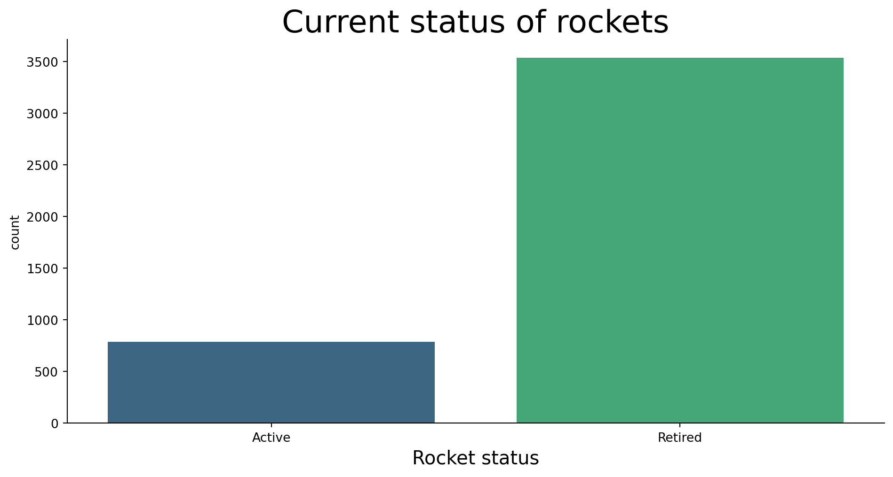
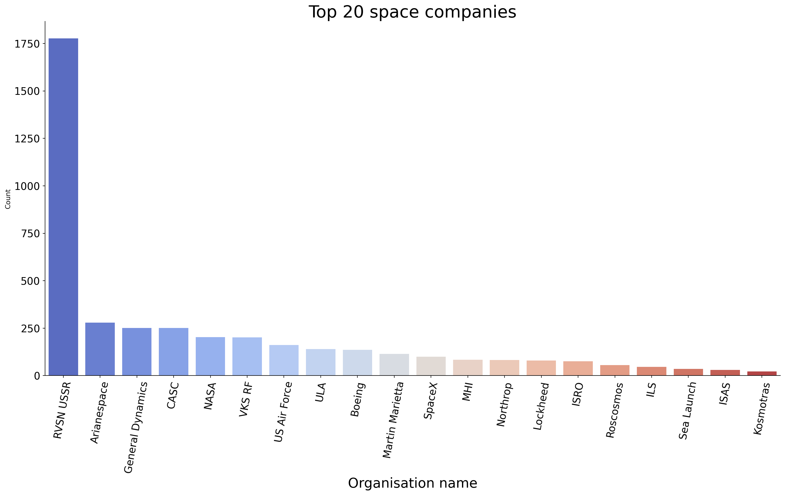
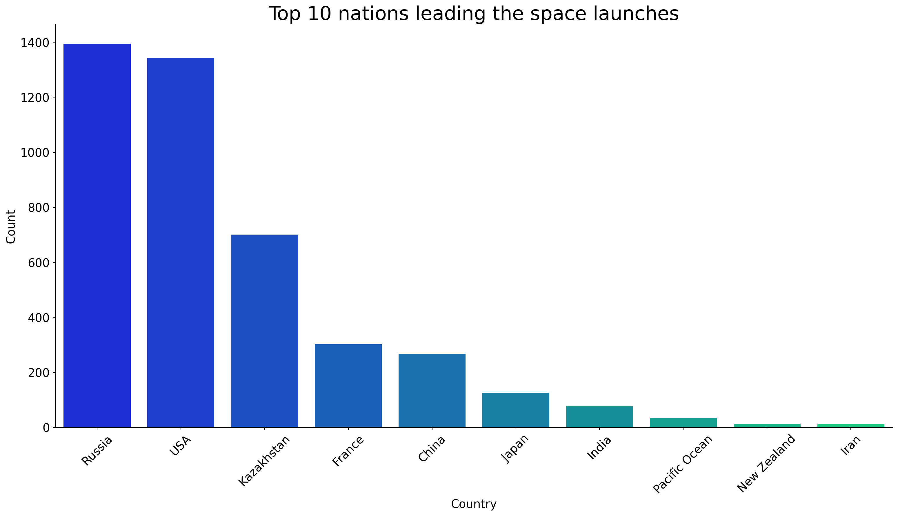
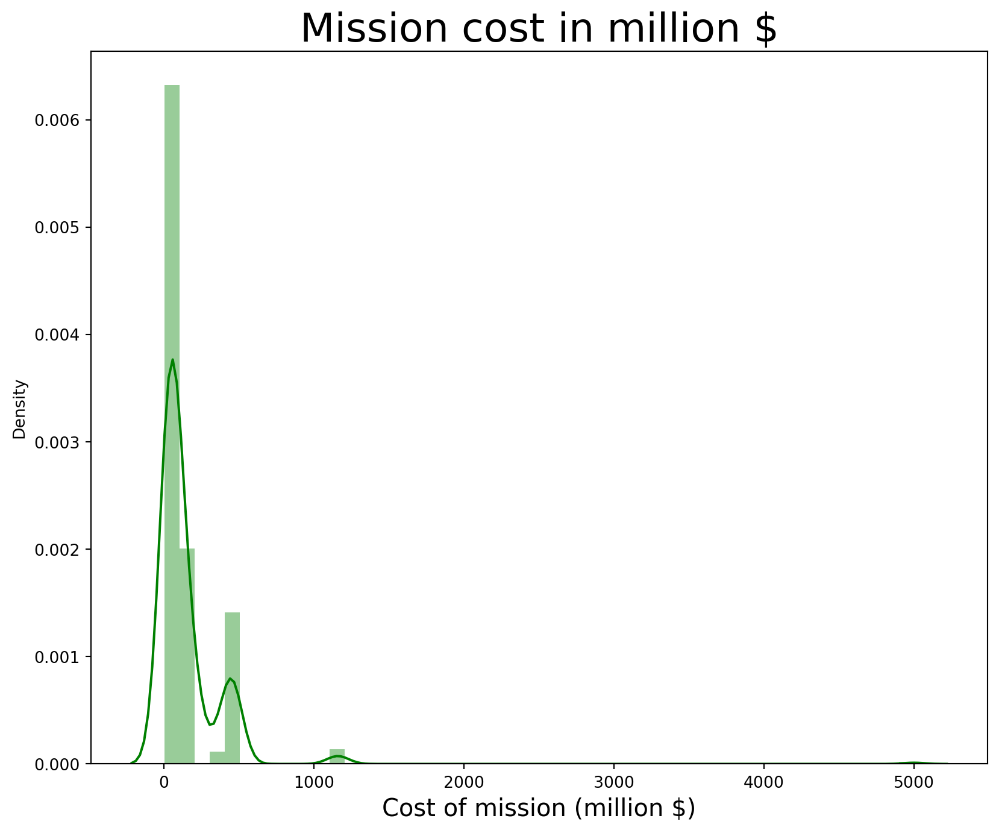
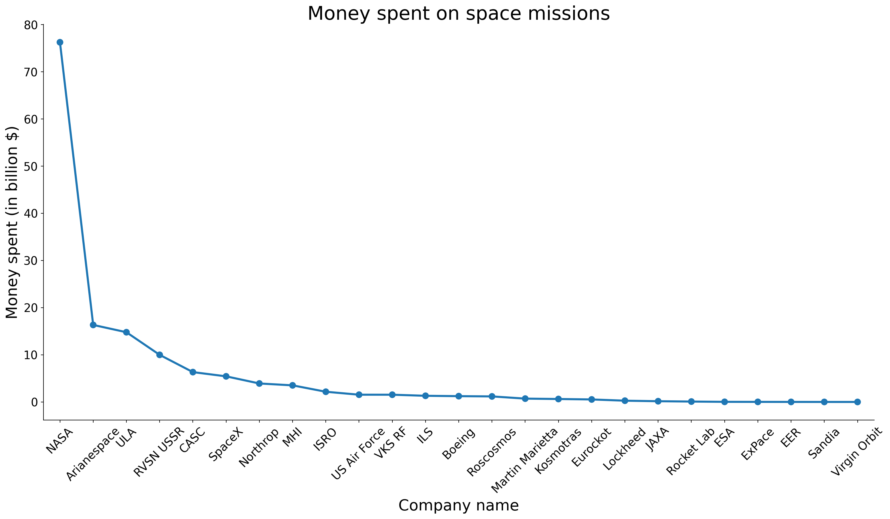
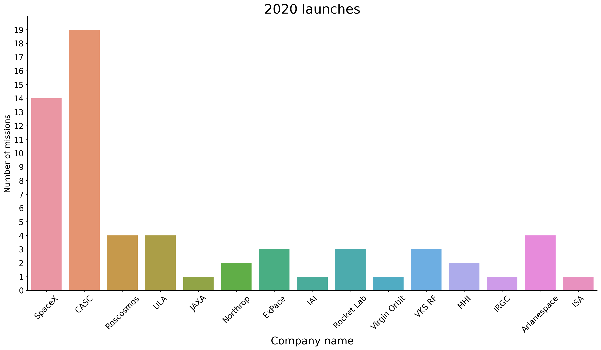

How has the space race among countries panned out so far ? 🚀
python
data cleaning
exploratory data analysis
visualisation
choropleth
Author
Arindam Baruah
Published
January 18, 2024
Ever since the start of world war when the USSR launched the first ever man-made satellite into the space called the Sputnik, the world has taken great interests in trying to explore beyond the realms of our planet. Rocket science, Cosmology, Astronomy are the epitome of engineering and science that require extreme levels of theoretical as well as experimental work.
A lot of research goes behind when and where should a space launch take place for reaching it’s destination at least possible resistance and with highest probability of success. At the same time, extreme levels of engineering is done to simulate the similar space conditions back on earth and test the launch vehicles for any possible failures. All these space missions require years of hard work, research and tests for success.
It provides immense national pride when launches are successful. However, it is also incredibly disheartening when the missions don’t succeed and millions of dollars alongwith national dreams burst into flames. However, as peculiar as science is, no experiment is ever famous without it’s fair share of failures.
Source: ISRO
1 Importing the relevant libraries and dataset
Let us start off with the usual step of importing all the required libraries and the dataset.
Code
import numpy as npimport pandas as pdimport seaborn as snsimport matplotlib.pyplot as pltimport plotly.express as pximport plotly.graph_objects as goimport plotlyfrom plotly.offline import download_plotlyjs, init_notebook_mode, plot, iplot
Let us quickly try to understand each of the columns and what they mean.
Company name : The space organisation undertaking the mission
Location : The point of spacecraft launch on earth
Datum : Date and time of liftoff
Detail : Name and type of the spaceship
Status of rocket : Whether the space craft is still under commission and active in it’s mission
Rocket : Cost of the mission in million $
Status Mission : Whether the mission was successful
3 Data Wrangling
Let us check for presence of missing values and other issues with the data if any.
Code
df.isna().any()
Company Name False
Location False
Datum False
Detail False
Status Rocket False
Rocket True
Status Mission False
dtype: bool
From the above, we see that only one particular column has null values. This is in the column of mission cost. It could be that not all organisations are comfortable with disclosing the mission cost. Let’s see how many mission costs are accounted for.
As we can see, majority of the space missions have not disclosed the cost of their mission. However, we will try to understand as much as possible from the data available to us already.
Let us check if all the data types are correct.
Code
df.dtypes
Company Name object
Location object
Datum object
Detail object
Status Rocket object
Rocket object
Status Mission object
dtype: object
We see that all the columns are objects when in fact, the Datum column should’ve been datetime and the Rocket column should’ve been integer. Let us solve these issues.
From the above pie chart, we see that about 89.7 % launch missions are successful followed by 7.84 % failures.
4.2 Rocket status
Let us check how many rockets are currently active.
Code
sns.catplot(x ='Status Rocket',kind='count',data=df,aspect=2,height=5,palette='viridis');plt.title('Current status of rockets',size=25);plt.xlabel('Rocket status',size=15);

Figure 2: Current status of missions
As we can see, about 800 rockets are still active while a majority of them have retired after completion of their mission.
4.3 Company name
Let us see which are the top 20 companies that have been leading space race.
Code
df_comps=df.groupby('Company Name')['Count'].sum().reset_index().sort_values(by='Count',ascending=False)df_comps=df_comps.head(20)sns.catplot(x ='Company Name',y ='Count',data=df_comps,palette='coolwarm',kind='bar',aspect=2,height=8);plt.title('Top 20 space companies',size=25);plt.xticks(rotation=80,size=15);plt.xlabel('Organisation name',size=20);plt.yticks(size=15);

Figure 3: Leading organisations with highest space launch missions
As we can see, RVSN USSR leads the way by a massive margin of above 1750 missions. This is not possible considering the fact that USSR has now dissolved for more than 2 decades and it takes immense money to perform even a single mission.
It could be explained by the fact that RVSN USSR used to perform Interconinental Ballistic Missile (ICBMs) tests as well. This might be the reason for such an inflated number.
4.4 Countries leading the space race
Let us try to find which countries are leading the space quest.
sns.catplot(x ='Country',y ='Count',data=df_countries,aspect=2,height=8,kind='bar',palette='winter');plt.title('Top 10 nations leading the space launches',size=25);plt.xticks(size=15,rotation=45);plt.xlabel('Country',size=15);plt.ylabel('Count',size=15);plt.yticks(size=15);

Figure 4: Countries with highest space launch missions
As we can see, Russia is leading the space race followed by USA closely in the number of space launches within the country. It is also to be noted that the majority of the space launches in Kazakhstan also are undertaken by Roscosmos, Russia.
4.5 Mission cost
Let us first see how the various mission costs of the available data are distributed.
Code
df_cost=df.dropna()plt.figure(figsize=(10,8))sns.distplot(df_cost[' Rocket'],color='green');plt.title('Mission cost in million $',size=25);plt.xlabel('Cost of mission (million $)',size=15);

Figure 5: Distribution of program costs for space missions
Let us check which companies have spent the most in their space missions so far.
Code
df_cost_comp=df_cost.groupby('Company Name')[' Rocket'].sum().reset_index().sort_values(by=' Rocket',ascending=False)df_cost_comp[' Rocket']=df_cost_comp[' Rocket']/1000#Converting costs to billion $
Code
sns.catplot(x ='Company Name',y =' Rocket',data=df_cost_comp,aspect=2,height=8,kind='point');plt.xticks(size=15,rotation=45);plt.xlabel('Company name',size=20);plt.ylabel('Money spent (in billion $)',size=20);plt.yticks(size=15);plt.title('Money spent on space missions',size=25);

Figure 6: Organisations with highest mission expenditure
As we can see, NASA has led the money spent on space missions by a long shot with around 75 billion dollars spent so far followed by Arianespace with 15 billion dollars.
4.6 Number of missions since the inception of the first successful mission
Here, we are gonna check the number of space missions in each year
Code
df['Year']=df['Launch date'].dt.year
Code
df_year=df.groupby('Year')['Count'].sum().reset_index()fig=px.line(df_year,y='Count',x='Year',height=800,width=1000)fig.update_layout(title='Number of missions each year',font_size=20,title_x=0.5)fig.show()
Figure 7: Number of space missions each year
As we can see, in the recent decade of 2010-2019, the space race has picked up again after a dip since 1977. Due to the pandemic and the global recession, it is expected that there will be a dip in the number of space missions in 2020.
Infact, let us check who have launched in 2020 so far.
Code
df_latest=df[df['Year']==2020]
Code
sns.catplot(x='Company Name',data=df_latest,kind='count',aspect=2,height=8);plt.yticks(np.arange(20));plt.title('2020 launches',size=25);plt.xlabel('Company name',size=20);plt.xticks(size=15,rotation=45);plt.yticks(size=15);plt.ylabel('Number of missions',size=15);

Figure 8: Number of space launches in the year of 2020
As we can see, CASC which is the space organisation of China has conducted the highest number of space missions followed closely by SpaceX of USA.
4.7 Success rate of the famous Mars Club
Let us check the mission success rate of the famous mars club. So far, only 4 nations have made it to mars and only 2 have landed. The USSR was the first country to land the Mars 3 lander but sadly, after soft landing, contact was lost after 15 seconds. NASA made history by landing their curiosity rover and have launched another mission called the perserverance in 2020 which is expected to land on the Jezero crater of Mars on 18th Feb, 2021.
Source: NASA
The Mars club consists of the following organisations:
NASA (USA)
Roscosmos (Russia)
ESA (European union)
ISRO (India)
It is also important to note that as we speak, the UAE, China and USA have their space crafts enroute to the Mars ORBIT.
Figure 9: Mission success rate for the leading space organisations
From the above plots, we see that Roscosmos has the highest success rate. However, number of missions undertaken by NASA are far higher and the success rate is nearly identical as Roscosmos. Hence, NASA fairs far better than the other companies in the success rate of mission.
4.8 Choropleth of the countries involved in the great space race
Code
map_data = [go.Choropleth( locations = df_countries['Country'], locationmode ='country names', z = df_countries["Count"], text = df_countries['Country'], colorbar = {'title':'No of Launches'}, colorscale='temps')]layout =dict(title ='Missions per country', title_x=0.5, geo =dict(showframe =False, projection =dict(type='equirectangular')))world_map = go.Figure(data=map_data, layout=layout)iplot(world_map)
Figure 10: Geographical representation of space launches for each country